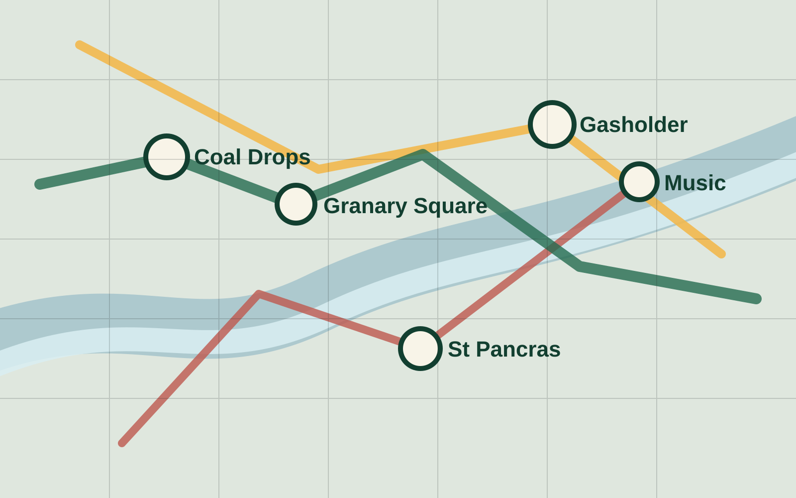

AI night planner for King's Cross
Turn a flat list of places into a believable night out.
Pick a vibe, budget, and time window. KingsCross Viber builds a multi-stop micro-adventure, then explains why each stop leads to the next.
Neo4j route logic
Kimchi concierge explanation
Tessl faster build workflow
Build my route
Live planner
Tune the night
Recommended route
Tonight’s plan
Open area intel
Map the route and pull nearby wiki context.
MapLibre renders the district over open tiles while the side panel combines a stable local brief with live nearby Wikipedia pages.
Live map
King's Cross open map
Place graph
Venues connected by neighbourhood, vibe, and walking distance.
Neo4j gives the route its structure: venues, vibes, and short walking links are connected so each recommendation can explain why one stop leads to the next.
Stage line
One sentence for the judges
“Neo4j gives us the route logic, Kimchi gives the user-facing explanation, and Tessl helped us assemble the right build workflow to ship it fast.”